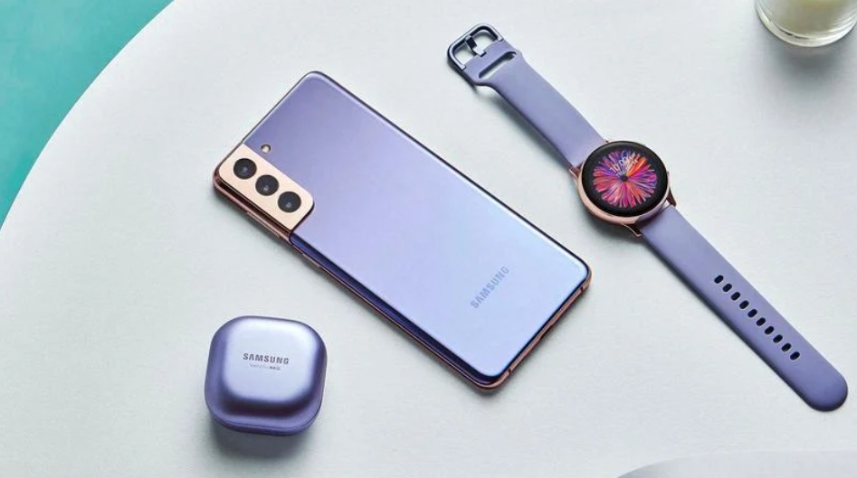

Galaxy S21
The highest resolution photos and video on a smartphone. Galaxy's fastest processor yet. A battery that goes all-day—and then some. First ever S Pen compatibility. A striking new design. A bold new Galaxy featuring a striking contour-cut body and our latest lenses that capture all of life's epic moments. The first Galaxy S smartphone compatible with S Pen adds a new level of precision to your creative pursuits. Its slim bezels and subtle camera cut-out offer a massive space for you to view and enjoy. Built for those "oh no!" moments, Corning® Gorilla® Glass Victus™ delivers scratch and damage protection that makes it the toughest glass on a Samsung smartphone. 8K Video, the highest resolution video in a smartphone, delivers beyond cinematic footage, making your 8K content and high-res pics worthy of its own theater. Plus 8K Video Snap lets you pull an album of crisp photos—up to 33MP—right out of every 8K video. Just record now, snap later. S Pen compatibility means you can finesse and fine-tune while editing your videos down to the last frame, with precision that your finger simply can't touch. Activate Super Steady and Galaxy S21 Ultra 5G turns into an action-ready steady cam, softening the bumps and delivering silky-smooth video when you're on the move. Super Smooth 60fps Video dynamically adjusts your frame rate so your video stays polished and super-smooth in any light. With the highest resolution in a smartphone, Ultra's 108MP camera captures so much true-to-life detail, you can pinch in again and again to discover even more stunning moments within. S21 Ultra 5G operates in conjunction with a Sony image sensor. The breakthrough Dual Tele Zoom system now zooms in faster, smoother and sharper than any zoom in the Galaxy series. And when paired with the all-new Zoom Lock, shots are more stable than ever. The Bright Night sensor is our biggest leap in low light photography, capturing bright, vivid colors in the dark of night. Shoot clear images with more speed and significantly less noise, while also controlling exposure time.Portraits get a face lift with enhanced AI that analyzes faces, lighting angles and depth of field to deliver stunning, studio-like portraits. Galaxy's first 5nm processor packs epic power and speed into a tiny chipset, injecting faster processing and more intelligence into Ultra's every move. The Knox security platform delivers a high level of security, protecting your phone from the chip up and giving you more confidence in your data and app permissions. It also features Samsung Knox Vault to keep your biometric authentication data under wraps. And with a larger, lower latency Ultrasonic Fingerprint sensor, you can unlock even faster — even if your finger's dry.